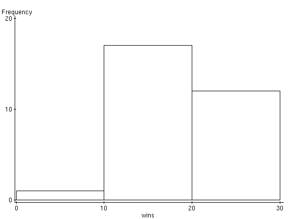
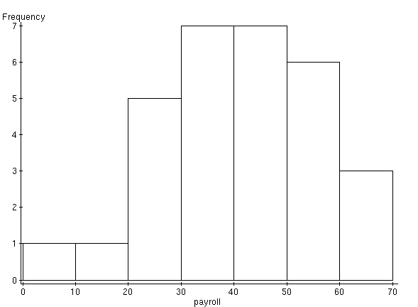
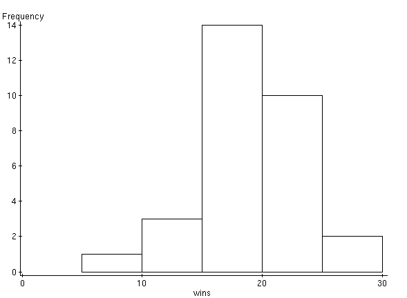
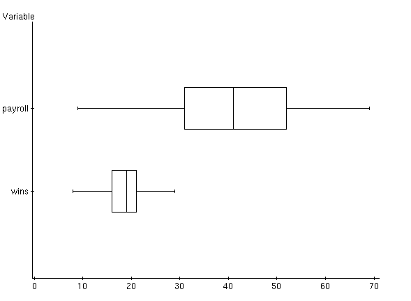

| Variable | n | Mean | Variance | Std. Dev. | Median | Range | Min | Max | Q1 | Q3 |
| wins | 30 | 18.833334 | 19.591953 | 4.42628 | 19 | 21 | 8 | 29 | 16 | 21 |
| payroll | 30 | 40.233334 | 224.87471 | 14.995823 | 41 | 60 | 9 | 69 | 31 | 52 |



Variable: wins Low : 8.0 1 : 144 1 : 55666778999999 2 : 0000124444 2 : 6 High: 29.0
Variable: payroll 0 : 9 1 : 3 2 : 02356 3 : 1233479 4 : 1157899 5 : 022356 6 : 039
